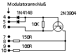

|
|
18.6 260/520 Video
260/520 Video
Der Videoanschluß:
Bei einigen älteren Modellen, deren Bedienungsanleitungen,
ist die Bezeichnung des Monitoranschluß, Pin 2 auf Seite 72
leider falsch mit 'Composite Video' angegeben. Wirklich ist Pin 2 bei
einigen 520ST nicht belegt.
Beim Modell 260ST und 520ST+ befindet sich an Pin 2 das Signal
'Composite Syncron'. Atari gab dazu die nachfolgende Änderung
heraus.
 Abbildung 1 - technische Änderung für den
Monitoranschluß
Die Schaltung lässt sich auf der Platine des 520ST leicht
nachrüsten
Beim 260/520 ist ausserdem noch der Pin 8 unterschiedlich belegt
|
|
|